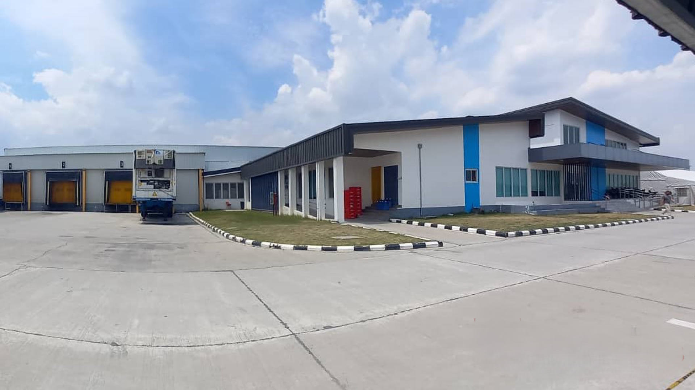

From Humble Beginnings
Founded in 1995 in Concepcion, Tarlac, JCL Production started as a small family-owned meat processing business with a simple goal: to provide the community with high-quality, traditionally-made meat products.
What began as a modest operation with just three employees has grown into a trusted local brand, while maintaining our commitment to handcrafted quality and authentic flavors.
